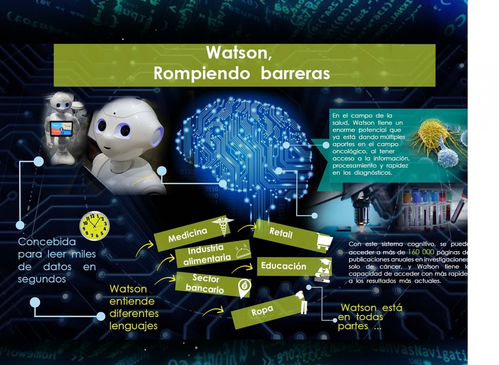

¿Qué es la Inteligencia Artificial?
-
La inteligencia artificial es la mayor revolución tecnológica desde que se inventó la informática, y tiene mucho margen de mejora.
Con la IA se desea replicar características que tenemos nosotros, como por ejemplo:Comunicarse de manera verbal con otras personas tanto de forma verbal como escrita, toma de decisiones de acuerdo a experiencias y datos recolectados, aprendizaje diario de errores y experiencia, etc.La Inteligencia Artificial describe las diferentes formas en que una máquina interactúa con el mundo que lo rodea. Este pretende que las computadoras piensen de la manera en que los humanos piensan, siendo capaces de simular los tipos de cosas que los humanos hacen y resolver los problemas de una manera mejor y más rápida que nosotros.Es un término bastante genérico para resolver tareas que son fáciles para los humanos pero difíciles para las computadoras. Este es el área más próxima a los humanos, con ella se puede interactuar con nosotros utilizando nuestro mismo lenguaje sin necesidad de utilizar palabras claves ni nada parecido.
- La Inteligencia Artificial se nutre de datos y crea algoritmos para obtener información en torno a un contexto específico y para interactuar en ese contexto, tratando de comportarse de manera similar al ser humano.
- el Big Data es la base de la IA, ya que es quien se encarga de analizar y localizar patrones en una gran cantidad de datos desestructurados, con el objetivo de convertirlos en información.

Aprendizaje Automático. Recuperado de:
-
Usos de la Inteligencia Artificial
Watsomapp. Se trata de un software integrado en un robot, que permite conversar con niños pequeños. Lo que esta aplicación permite es, que los niños se comuniquen con este androide, y este último, saque conclusiones acerca del bulling que pueda existir en el aula. Y es que, gracias a la Inteligencia Artificial, este robot actua como un ser humano y permite que los menores se abran emocionalmente. A partir de ese momento, la aplicación manda un informe al colegio, diferenciando a los alumnos abusadores, de los "débiles" y de los que aun sabiendo la situción no da la alarma. Gracias a este avance, se pueden prevenir posibles casos de abuso.
La era cognitiva. Recuperado de
- Cronologia:
-
- 1950 — Alan Turing crea el “Test de Turing” para determinar si una máquina era realmente inteligente. Para pasar el test, una máquina tenía que ser capaz de engañar a un humano haciéndole creer que era humana en lugar de un computador.
- 1952 — Arthur Samuel escribe el primer programa de ordenador capaz de aprender. El software era un programa que jugaba a las damas y que mejoraba su juego partida tras partida.
- 1956 — Martin Minsky y John McCarthy, con la ayuda de Claude Shannon y Nathan Rochester, organizan la conferencia de Darthmouth de 1956, considerada como el evento donde nace el campo de la Inteligencia Artificial. Durante la conferencia, Minsky convence a los asistentes para acuñar el término “Artificial Intelligence” como nombre del nuevo campo.
- 1958 — Frank Rosenblatt diseña el Perceptrón, la primera red neuronal artificial.
En la segunda mitad de la década de los 70 el campo sufrió su primer “Invierno”. Diferentes agencias que financian la investigación en IA cortan los fondos tras numerosos años de altas expectativas y muy pocos avances.- 1979 — Estudiantes de la Universidad de Stanford inventan el “Stanford Cart”, un robot móvil capaz de moverse autónomamente por una habitación evitando obstáculos
- 1967 — Se escribe el algoritmo “Nearest Neighbor”. Este hito está considerado como el nacimiento al campo del reconocimiento de patrones (pattern recognition) en computadores.